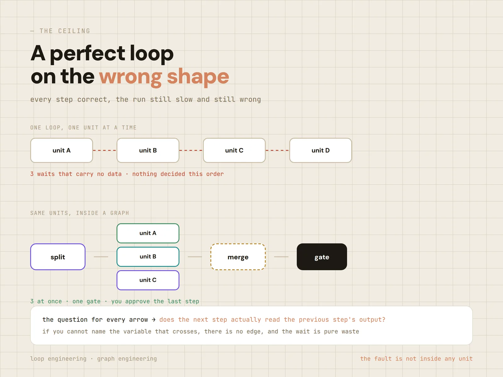
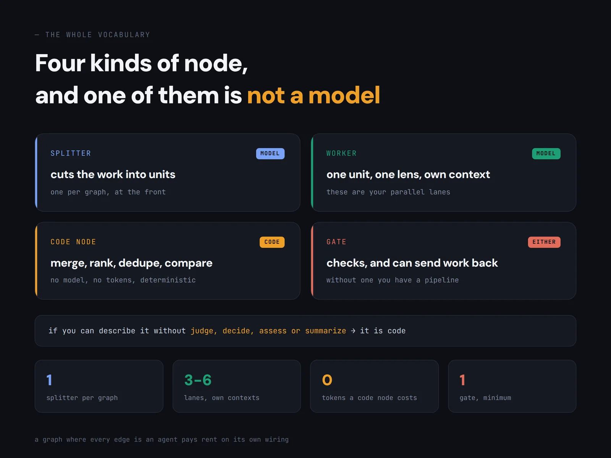
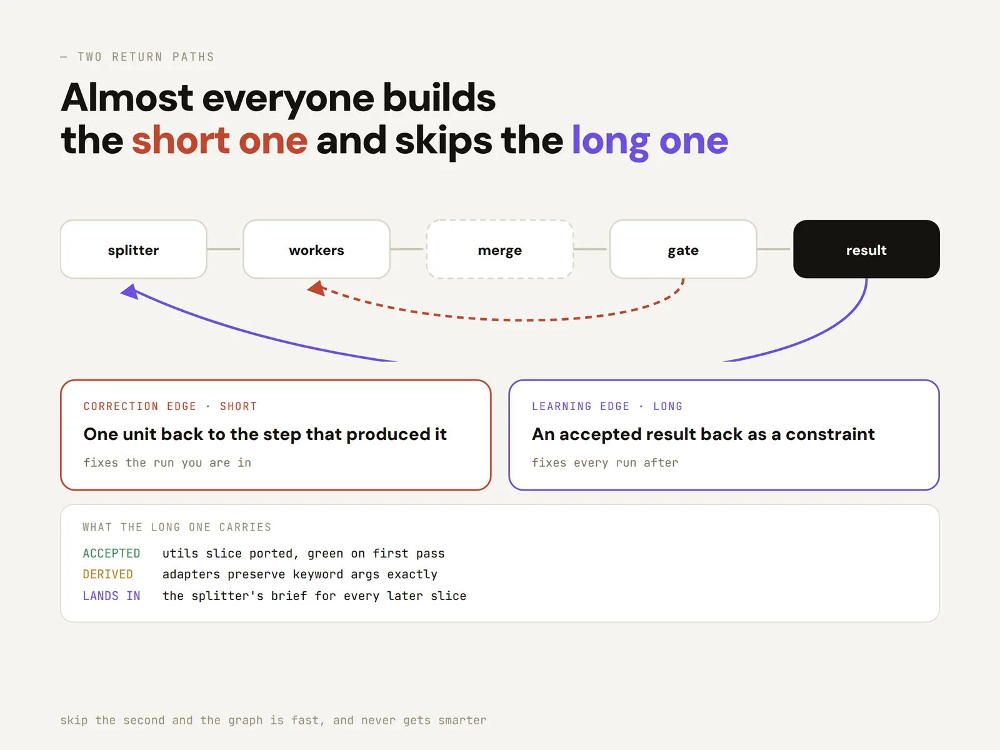
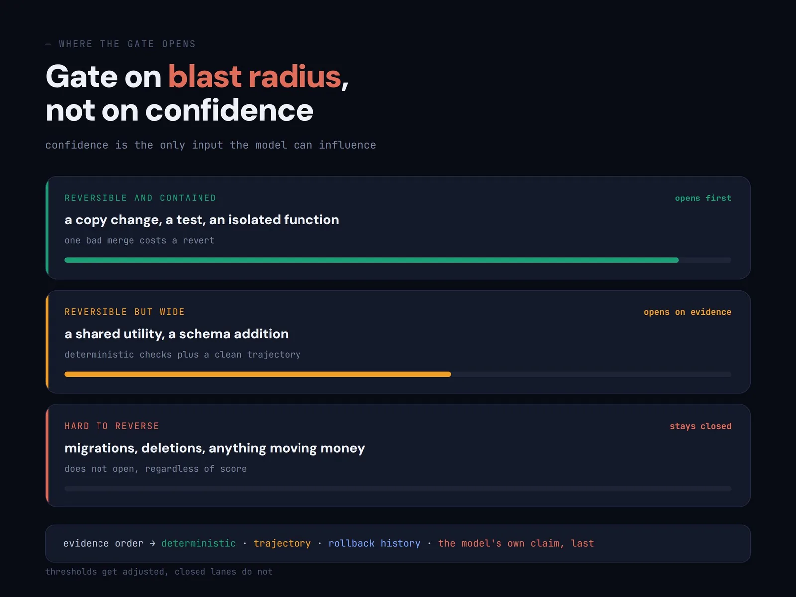

你在盯每一步，是因为没有别的东西在盯
You check every step your agents take. Not because you want to, but because nothing else does.
你检查智能体走的每一步。不是你想这么做，而是没有别的东西在做这件事。离开这把椅子需要两样东西，而几乎所有人只搭了其中一样。
Loop 让一个工作单元在没有你的情况下也能做对；Graph 决定到底有哪些工作单元。作者要讲的是：这两者的分界、那些不显而易见的机制，以及你只批准一件事、而不是批准所有事的那个点。
两个词先翻成大白话
Loop（循环）：同一件活反复“做 → 查 → 改”，直到查得过。管的是“这一步做对没有”。
Graph（图）：一张流程图，画出有哪几件活、哪些能同时做、哪些必须等别的结果。管的是“该有哪几步、谁等谁”。
Loop 是一个能失败的检查
A loop is a check that can fail.
把其他东西全剥掉，一个 loop 只有四个部分：产出、检查、修正、重复直到变绿。检查就是全部。
如果没有一个能在你离开房间时“判这份活不合格”的东西，你就没有 loop——你只有一个调度器（scheduler，只负责按时叫它干活）。
这听起来显而易见，可几乎没人先写检查。大家先把活做出来，再在末尾拴一个审查，而这个审查是让另一个模型看一眼输出。两个乐观主义者互相点头。
先写条件，并且写成程序能判定的样子：
- GREEN
the test suite exits 0测试套件的退出码是 0（全部测试通过） - GREEN
every claim carries a source line每一条论断都带着出处那一行 - GREEN
the diff touches only files listed in the plan改动只碰计划里列出的文件
- NOT A CHECK
the output looks good输出看起来不错 - NOT A CHECK
the model says it is confident模型说它很有把握 - NOT A CHECK
no errors were raised没有报错
最后一条专坑细心的人。没有报错，不是正确的证据。把 loop 建在它上面，你会得到一个自信地重复同一个错误、直到预算烧光的系统，而且一路上日志都干干净净。
像手术安全核对单，而不是“我看着没问题”
手术安全核对单不问“感觉怎么样”，它问：患者身份核对了吗？手术部位标记了吗？影像在不在？每一项都能被打上“否”，打“否”就不开刀。这才是一个能失败的检查。
“没有报错”就像“监护仪没响”：导联脱落、报警阈值没设，它也不响。不响不等于病人稳定。
没人提醒你的天花板
The ceiling nobody warns you about.
Loop 让一个工作单元变得更好。这是它全部的工作，而且它非常擅长。
但它不能决定有哪些单元、它们的顺序，也注意不到五步里有两步根本不需要互相等待。于是你得到一个非常好的智能体，一次一步地、按错误的顺序、跑着错误的三步。
每一步都是对的，结果仍然慢、形状仍然不对。调 loop 修不好它，因为毛病不在任何一个单元里。这正是人们开始怪模型的时刻，也正是下一层开始回本的时刻。

急诊里每项检查都规范，病人却在走廊等了 4 小时
抽血 → 等结果 → 再开 CT → 等结果 → 再请会诊。每一项都做得标准，可抽血和 CT 本来可以同时开。问题不在哪一项检查做得不好，而在流程的形状。这时候再去“培训抽血护士”，修不好等待。
潮水一来一回，把同一片沙滩抹得更平——这是 loop。可潮水决定不了海岸线长什么样。下面走到上一层。
Graph 是上面那一层：节点与边
The graph is the layer above.
图是工作的形状：什么在跑、什么同时跑、什么要等、什么根本不跑，以及结果往哪里送回去。
只有两样东西，没有别的。节点（node）是一个工作单元：一个有边界的任务，一个输入进，一个输出出。边（edge）是一个依赖：这个节点的输出喂给那个节点的输入。
每一次不必要的等待背后，都是同一个错误：把“然后”当成了边。“总结这个文件，然后查一下天气”——两者之间没有边，天气不会读取那份总结。它们是两个独立节点，被一段线性脚本串在了一起，而这个串联只来自你打字的先后顺序。
所以拿你现有流水线里的每一根箭头问一遍：下一步真的读了上一步的输出吗？如果你说不出跨过去的那个变量叫什么，那里就没有边，那段等待纯属浪费。多数链条里都有两三根这样的箭头，找到它们，通常就是你能拿到的最大一笔提速。
动手试试：给箭头做个体检 aiai 讲解
抽血和拍胸片不用互相等
“根据血钾结果调整补钾量”必须等血钾，跨过去的变量就是“血钾值”，这是一条真边。“抽血”和“拍胸片”之间说不出任何变量，只是开单时写在了前后两行，它们完全可以同时进行。
四种节点，其中一种不是模型
Four kinds of node, and one of them is not a model.
拆分器、工人、代码节点、闸门（splitter, worker, code node, gate）。整个词汇表就这些。
把工作切成单元，站在最前面。它决定得比谁都多：按错误的维度切，下游全部白干。按文件夹切一个代码仓库，四个工人审的是同样三个文件；按“爆炸半径”切，每个人都看到别人看不到的东西。
每人做一个单元，带一个视角，在自己的上下文里。最后这点最常被跳过：四个审计员共用一个窗口，第一个写下发现，其余的读到它，四份报告都围着同一件事——你付了四份钱，买到一个意见和三个回声。
最容易被忘掉的一种：合并、排序、去重、比较每个导出前后的差异。这些都不是推理，每项只有一个正确答案，几行代码就写完；交给模型跑，只会给一个原本没有成本、延迟和波动的步骤，平白加上这三样。
检查结果，并且可以把活打回去。没有闸门，你得到的只是一条流水线。
一条判别法：如果你描述这个变换时，可以不用“判断、决定、评估、总结”这几个词，它就是代码。一张每条边都是智能体的图，是在为自己的接线交房租。

独立读片才算三个意见；算补液量用计算器
请三位影像科医生“各自独立读片、读完再看彼此报告”，才是三个意见。如果第二、第三位先看到了第一位写的“考虑肺炎”，往往就只是附和。这就是工人要有各自的上下文。
按体重算补液量、按时间给化验单排序、合并两份药物清单去掉重复——这些用公式和表格，不用请主任会诊。这就是代码节点。
Loop 住在节点里面，Graph 住在节点之间
The loop lives inside a node. The graph lives between them.
一句话解开全部困惑：loop 住在节点里面，graph 住在节点之间。
一个单元里面（loop）
单元之间（graph）
第二组里没有一样能在单个单元内部表达出来。所以你不用二选一。
节点里没有 loop 的图，会并行地产出未经验证的工作，这比串行还糟，因为量更大。外面没有图的 loop，是排在一个没人设计过的队列里的一个非常好的步骤。
手术内部的核对是 loop，手术室排程是 graph
每台手术内部有自己的确认：止血确认、器械清点，不过关就继续处理——这是 loop。哪台先做、哪两台可以并台、术后去 ICU 还是回病房——这是 graph。只会把每台手术做好、却没人排程，手术室照样堵。
木桩是节点，绳子是边。只有真正需要拉住彼此的木桩之间，才值得系一根绳。
两条回路，以及大家都跳过的那一条
The two return paths, and the one everyone skips.
没有回头路的图是一条流水线：产出，然后遗忘。下周它从同一个地方出发，带着同样的盲点。能干活的图有两条回路，各干各的事。
闸门把一个单元打回给产出它的那一步，修的是你正在跑的这一次。
一个被接受的结果作为约束回到拆分器，修的是之后的每一次运行。
几乎所有人都建了第一条、跳过了第二条。征兆是：系统很快，却从不变聪明。学习边不携带输出本身，它携带从输出推导出来的约束：
- ACCEPTED
utils slice ported, green on first pass已接受：utils 这一片移植完成，第一次就通过 - DERIVED
adapters preserve keyword args exactly推导出的约束：适配器必须原样保留关键字参数 - LANDS IN
the splitter's brief for every later slice落在哪里：之后每一片的拆分器任务说明里
注意它落在哪里：不在工人的指令里，而在塑造“工作怎么切”的那份说明里。一个被确认的原因变成一条规则，于是下一次出问题，从这一次结束的地方开始。

当场重缝是纠正边，写进科室常规是学习边
术中发现缝合不满意，拆了重缝——修的是这台手术。并发症讨论会上确认了原因，把“这类病人术前必须查 X”写进科室常规——修的是以后每一台。关键是写进常规（相当于拆分器的任务说明），而不是只私下提醒那一位医生（相当于某个工人的指令）。
退回那一个单元，不是整批
Return the unit, not the batch.
这是回路上代价最大的错误，值得直说。四个切片已经移植完，一个没过测试。如果整批退回，三个正确的切片会被重写。它们的新版本只是“不同”，不是“更好”，因为它们本来就没错。
现在四个都得重新验证，而那三个里任何一个，这次都可能因为无关的原因失败。你把一次失败变成了四个不确定的结果，还为此付了钱。一次运行里这么来两回，它就永远收敛不了。从外面看，这像是模型一再失败；其实是回路在摧毁正确的工作。
随退回一起走的东西各有各的用处（原文称“四样东西”，示例卡里第一行 UNIT 先标明退回的是哪个单元）：
- UNIT
handlers slice单元：handlers 这一片 - VERDICT
red判定：红（不通过） - REASON
test_auth_redirect failed原因：test_auth_redirect 这个测试失败 - EVIDENCE
expected 302, got 200, handlers/auth.py:88证据：期望返回 302，实际返回 200，位置在 handlers/auth.py 第 88 行 - SCOPE
fix this file only, do not touch other slices范围：只修这个文件，别碰其他切片
范围（SCOPE）这一行比看起来重要。没有它，退回的单元会自己长大：智能体打开文件，注意到旁边两个问题，顺手也修了，你本来只想纠正一个切片，结果变成一份没人审过的四文件改动。
上限三次。如果一个单元三次纠正都没过，问题出在产出它的那个计划里，而 loop 看不见计划。
只退回一张化验单
血钾那一管标本溶血了，就只重抽血钾，不会把血常规、肝肾功、凝血全部重抽——那几项本来没问题，重抽一遍只会多出新的不确定。
退回单写清楚：哪一管（UNIT）、不合格（VERDICT）、原因是溶血（REASON）、证据是标本外观和异常偏高的钾值（EVIDENCE）、只重抽这一项（SCOPE）。如果连续三次溶血，别再抽了，去查采血流程本身——那是“计划”的问题。
按爆炸半径开闸，不按把握
Open the gate on blast radius, not on confidence.
多数文章的做法是：算一个置信度分数，设一个阈值，高于阈值就放行。这是选错了变量。
置信度是这个决定里最弱的输入，原因很容易被忽略：它是唯一一个模型自己能影响的输入。强变量是“如果这个改动是错的，会发生什么”。按错误撤销起来有多贵，把工作分成三条车道：
改一段文案、加一个测试、一个有测试覆盖的独立函数。一次坏的合并，代价就是一次回滚，所以这条道可以最先打开。
一个共享的工具函数、一次数据库结构的新增、十几个调用方都会碰的东西。闸门看确定性检查，再加一条干净的运行轨迹。
数据迁移、删除、任何写入生产数据或动钱的操作。不管分数多高，这条道都不开。
第三行不是“阈值设得很高”，而是一条不开的道。区别很重要：阈值会被人调，关着的道不会。
在一条开着的道里，闸门按顺序读证据：先看确定性结果，再看这次运行的轨迹，再看这个节点的产出过去被回滚的频率，模型自己的评估放在最后。

换药可以放手，截肢必须上级在场
换药、调一下补液速度，错了随时能改——这是第一条道。改长期医嘱、调整抗凝方案，影响面广，要核对检验结果和用药过程——第二条道。截肢、器官切除这类不可逆的操作，不管住院医“多有把握”，都必须上级医生在场决定——第三条道，不靠把握开。
“把握感”恰恰是最容易被说服的那一项：模型说自己有把握，就像实习生说“我觉得没问题”。
水从一个潮池流向下一个，只沿着真正相连的水道。最后汇进的那一池，是你要守的地方。
在你自己的工作上，从哪里开始
Where to start on your own work.
拿一件你反复做的事。画出拆分器、车道、合并、一道闸门、一条回边。顺序是：
- 先建闸门一旦有东西能大声地失败，其他一切都变容易。没有闸门的图，只是更快地产出未经验证的输出。
- 再建车道把工作按单元并行起来。
- 学习边放最后在有东西开始“接受结果”之前，你没法从被接受的结果里推导约束。
拿“每周文献速递”练一遍
闸门：每条文献必须有 DOI，且能在 PubMed 或 Crossref 查到——查不到就退回那一条。
车道：拆分器按数据库切，PubMed、Embase、Web of Science 各一个工人，各查各的、互不看结果。
代码节点：按 DOI 去重合并、按日期排序，用脚本不用模型。
学习边：你连续几周都删掉综述类文章，就把“排除综述”写进拆分器的检索说明，而不是每周再删一遍。
把人放在一步上
Put the human on one step.
把人放在后果最重、最难撤销的那个点上。批准合并；选择哪些修复上线。不是审查中间产出，不是确认每一步。
人一旦站在图的中间，就会成为其中最慢的节点，整张图只能以一个人读东西的速度运行。
主刀不盯每一次清点，但关腹前必须签字
器械护士清点、巡回护士核对，这些有自己的检查。主刀不必每一步都去看，但“关腹前清点无误”这一步，必须有人确认签字。人守的是最后、最不可逆的那一道。
三句话装下整个纪律
Three lines hold the whole discipline.
衡量路径，而不只是它落到的那个答案。
Measure the path, not only the answer it landed on.
一个不改变下一步跑什么的判定，只是一份报告。
A verdict that does not change what runs next is a report.
任何你没变成永久约束的失败，你都会再遇见一次。
Any failure you do not turn into a permanent constraint, you will meet again.
多数人会继续调一个 loop，并管它叫系统。在它周围画出图的人，会跑起一整支队伍，并且始终不太明白，为什么别人觉得跟上这么难。
一页速查表
One-page summary · 可截图保存
自测 5 题
点题目看答案
1“这次运行没有任何报错”能不能作为 loop 的检查条件？
2“检索文献，然后生成本周排班表”之间该不该有一条边？
3四个工人共用同一个上下文窗口，会出什么问题？
4四片里一片没过测试，正确做法是什么？
5一个删除生产数据的操作，模型置信度 0.99，闸门该放行吗？
来源与相关课件
- 原文：Hanako（@hanakoxbt），“Loops and Graphs: how to stop babysitting agents and only approve the last step (full course)”，X 长文，2026-08-23。打开原文 ↗
- 作者的完整课程：agent-layers.vercel.app（原文提到，本站未审阅其内容）。
- 本页的「原文」部分为中文转述，尽量贴近原句；标「aiai 讲解」的比喻、医疗类比和练习示例由 aiai 人工智能学院补充，不代表原作者观点。4 张原文配图版权归原作者；3 张氛围插图与头图为 AI 生成。